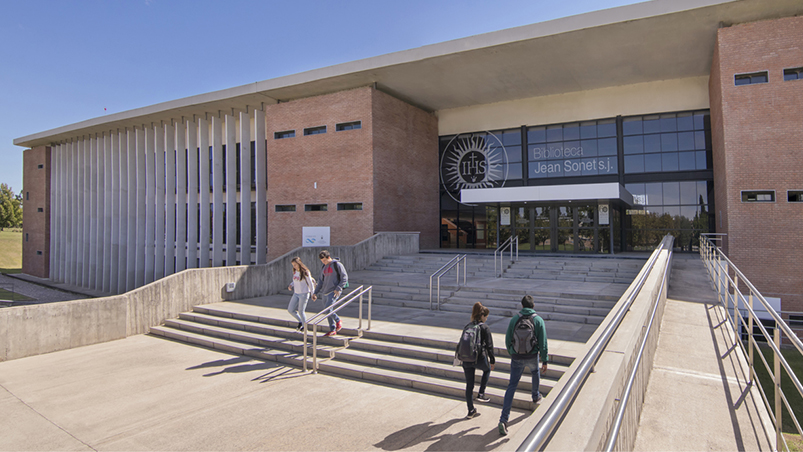
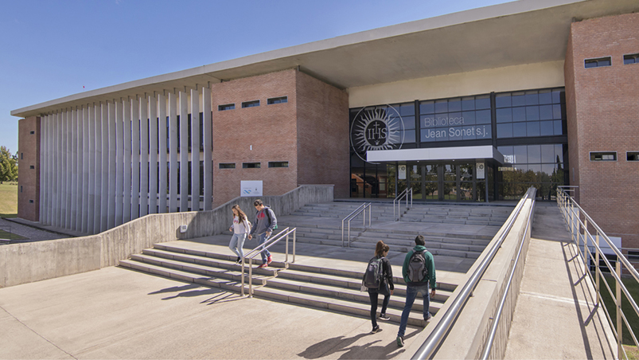

Descubre tu futuro profesional
Elige una de las dos carreras y navega por la información: instituciones, duración, plan de estudio, testimonios y fuentes.
Nota: Cambia rapido de carrera con 1 o 2

Motivos / Influencias
Aquí irán los motivos personales y las influencias (factores internos y externos) que explican por qué te interesa cada carrera. Por ahora incluimos el enlace a tu carpeta de Drive y un texto introductorio editable.
Me interesa la carrera por la organización, y porque valoro el trabajo orientado a la gestión y al cumplimiento normativo. Factores internos: Gusto por el orden, las matematicas y los trabajos con respuestas concretas. Factores externos: Pocos, sin influencia familiar y con poca importancia sobre el tiempo o el dinero.
Universidades donde estudiar
Se muestran las universidades relacionadas con la carrera seleccionada.
Universidades (Contador)
Información seleccionada
(Imagenes con fines ilustrativos)

 

Plan de Estudio y Descargas
Aquí puedes descargar el plan de estudio correspondiente a la carrera seleccionada (si el enlace está disponible) y desplegar el plan completo con el botón.
Testimonios / Entrevistas
Extracto de entrevista (≤ 5 minutos). Los videos / audios mostrados dependen de la carrera seleccionada.